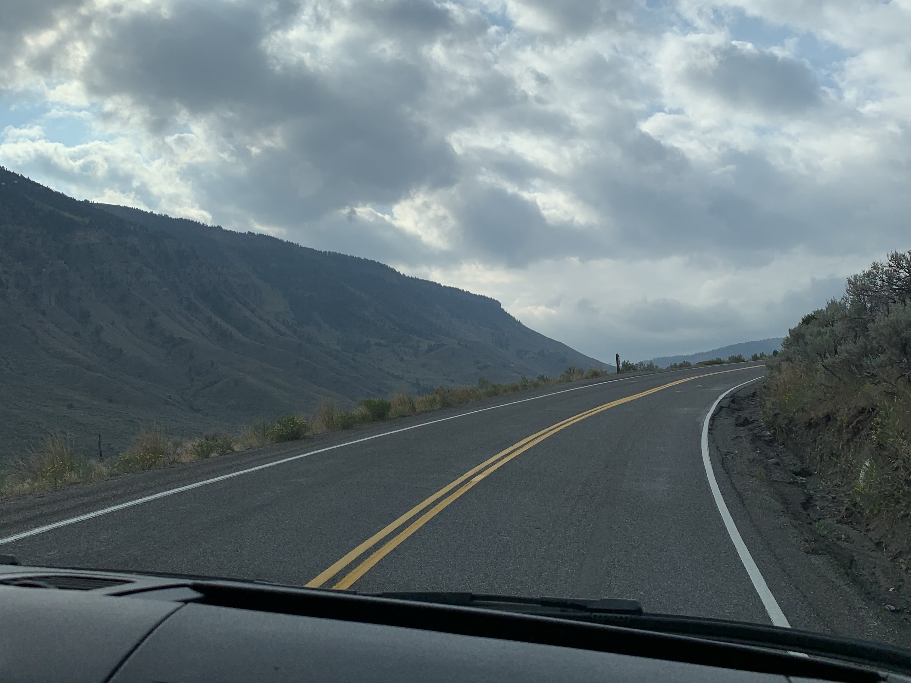

Learning
A space dedicated to my passion for growth, showcasing my continuous pursuit of knowledge through academic studies, online courses, and personal exploration.

A space dedicated to my passion for growth, showcasing my continuous pursuit of knowledge through academic studies, online courses, and personal exploration.